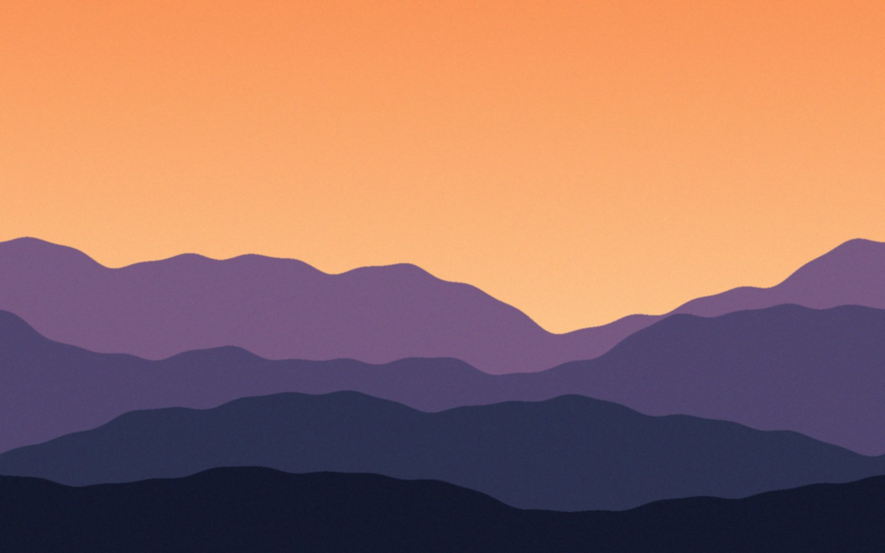
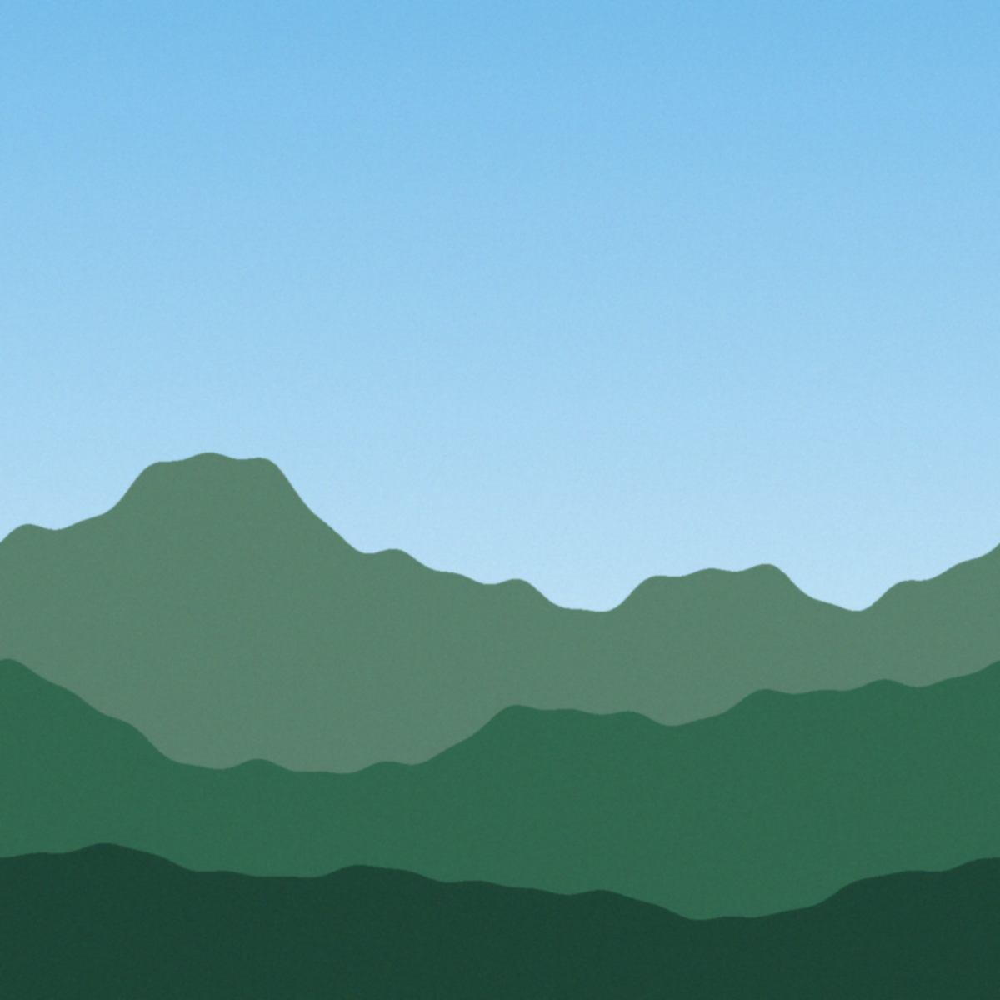
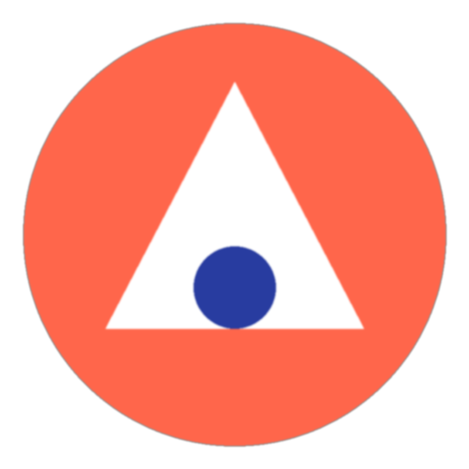

Round trip test
Trivial slides first, then the hard ones.
Plain bullets
- First point, short and simple
- Second point with bold and italic words
- Third point that is long enough to wrap onto a second line so that the wrapping behaviour of a list item shows up clearly in the comparison
Text beside a photo
A JPEG cropped with object-fit and rounded corners.
See the report or jump to the numbers.


A full-bleed PNG, with a translucent caption on top
A simple table
| Region | Q2 | Q3 |
|---|---|---|
| North | 1,204 | 1,380 |
| South & East | 982 | 1,105 |
| West | 1,510 | 1,492 |
Hidden slide
This must not reach PowerPoint.
Glass, blur and elevation
48%Backdrop blur on translucent cards
2.4×Blurred gradient orbs behind them
€9MBorders with alpha and deep shadows
SVGs

Rotate, skew, 3D, clip
Rotated card
Nested block children.
Rotated text
Skewed box
Scaled 1.5×
Tricky gradient text & runs
Letter spaced and upper-cased
Pseudo-element arrow, highlighted words, H2O and E=mc2, struck, underlined.
- Numbered one
- Numbered two
- Nested bullet
- Another nested
- Numbered three
A justified paragraph that runs over several lines, with Ünïcödé, 日本語 and emoji 🎉 in it, plus characters that break naive escaping such as <tag> & "quotes".
Overlaps and z-index
On top
Middle, 85%
Bottom
Conic

Bento
Grid with mixed tiles
64%
+12
Gradient tile
Dashed outline
Logo in a corner
Last wide tile with white text on dark